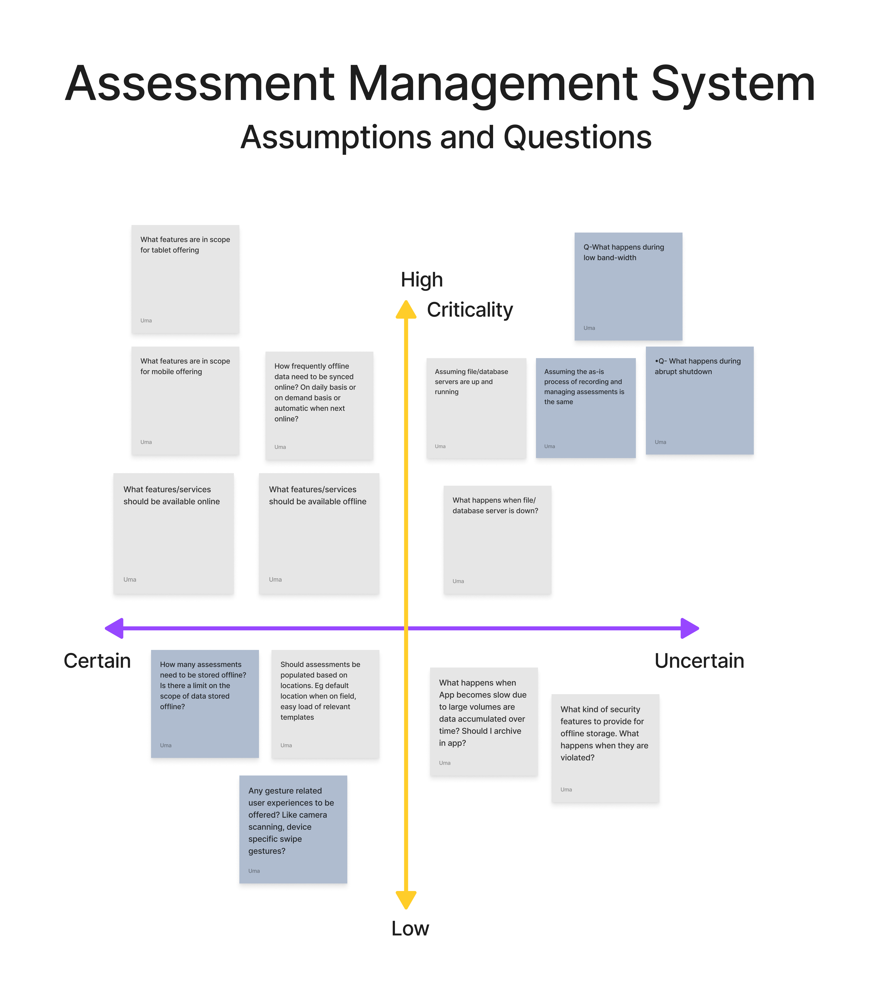
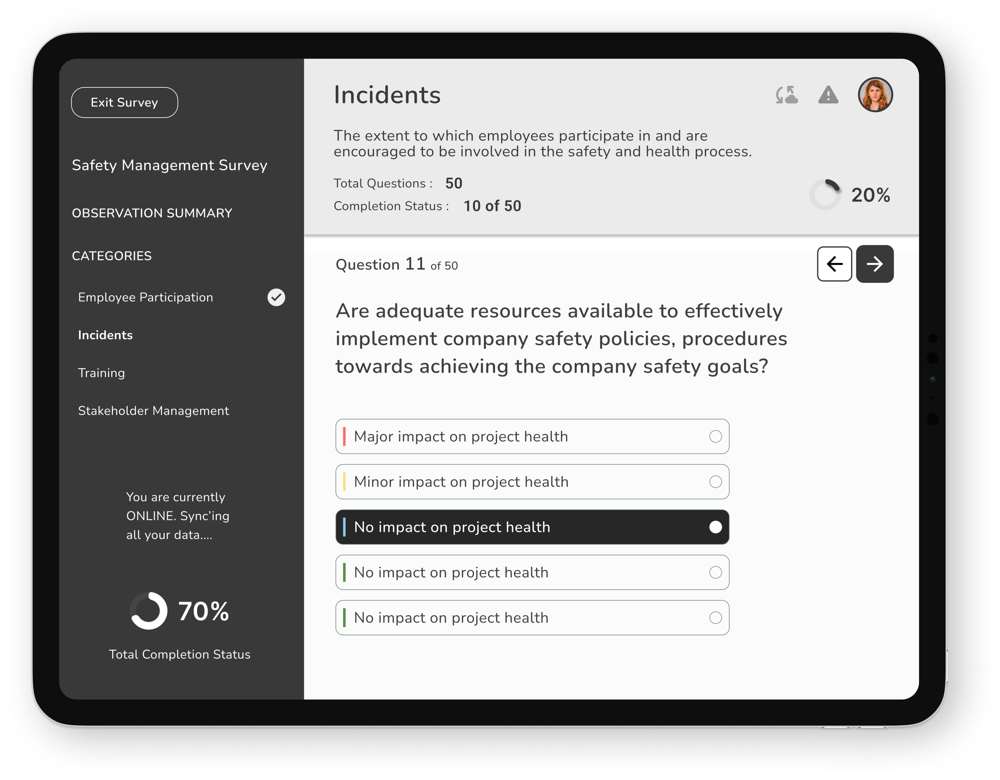

Three-part series: Phase 1 is the real client redesign. Phases 2 and 3 are self-directed learning exercises built on this project — not additional client work.
Compliance Management System — Mobile-First Field Redesign
| Role | Platform | Domain | Year |
|---|---|---|---|
| UX Designer & Product Analyst | iPad & iPhone (iOS) | B2B Enterprise Compliance System | 2021 |
Introduction
This case study documents the end-to-end redesign of a legacy enterprise compliance management system for field-based users. The platform was mature and well-adopted on desktop, used by compliance managers, administrators, and office-based assessors. However, field users conducting on-site inspections, audits, and assessments at remote locations and live facilities had no way to use the system directly in the field.
Without a portable, field-ready interface, assessors were forced into a two-step workaround: making notes outside the system on-site, then returning to a desktop to manually enter or update the assessment record. This broke the workflow at its most critical point — the moment of observation — and introduced delays, transcription errors, and compliance risk.
The strategic response was purpose-built field-native features that field assessors could carry into any environment and use to fill in assessment forms directly and offline, without needing to revert to pen and paper or defer data entry to a later desktop session. The offline-first architecture, draft save, and auto-sync features were not enhancements — they were the core enablers that made direct field use viable.
This case study covers the research, design, and validation of that redesign: diagnosing user pain, mapping journeys, designing for the field context, and validating through usability testing.
Approach: Research → Design → Validation
Prototype
Skills Used
Problem Statement
The Core Access Failure
Field assessors were conducting compliance inspections at remote sites, live facilities, and outdoor environments where a laptop or desktop was neither available nor practical. The compliance system had only a basic mobile interface, which produced a structural problem: the moment of assessment — when evidence was fresh, context was visible, and accuracy was highest — was exactly when the system could not be used, forcing assessors into a two-step workaround. The solution was to extend the system across multiple touchpoints — desktop, iPad, and mobile — with a seamless experience that allowed assessors to fill forms, work offline, and sync data without any break in workflow.
Two Costly Workarounds Emerged
| Paper-Based Workaround | Assessors took handwritten notes on-site and manually re-entered data at the desktop later. This introduced transcription errors, duplicated effort, and created compliance gaps between the moment of observation and the point of record. |
| Deferred Completion | Assessors waited until returning to a fixed location to complete digital records, hours or days after the site visit. Observations faded, context was lost, and time-sensitive incidents were flagged late. |
The Quantified Usability Gap
| Desktop Completion Rate | 82%, the baseline for a well-functioning system |
| iPad Pre-Redesign Completion Rate | 21%, 4× below desktop baseline |
| Primary Abandonment Point | Draft save and offline sync — the exact moments the field workflow required most |
- Manual note-taking
- No offline access
- Frequent data loss
- Delayed validations
- Poor mobile compatibility
Research & Discovery Methodology
The research phase combined qualitative field investigation with quantitative funnel analysis. This dual approach was deliberate: qualitative methods revealed why assessors were failing; quantitative analysis revealed where and how severely. Together they built the complete picture needed to design a credible, evidence-driven solution.
| Stakeholder Discovery Workshops | Facilitated sessions with compliance managers, field assessors, and system administrators. Used feedback grids (Works Well / Needs to Change / Questions / Ideas) to surface competing priorities and hidden assumptions. |
| Field Observation & User Interviews | On-site observation of assessors at work, watching how notes were taken, how the app was (or wasn’t) used, and where confidence broke down. Interviews followed each observation to understand the emotional and cognitive experience. |
| User Personas & Empathy Mapping | Synthesised research into a primary persona (Adam, Field & Survey Officer) with empathy maps capturing what he does, thinks, feels, and needs at each stage of the assessment workflow. |
| Customer Journey Mapping (As-Is) | Mapped the current-state journey step-by-step, from travelling to a site through to post-submission, documenting actions, thoughts, feelings, and needs at each stage. Surfaced the emotional low points (anxiety, confusion, frustration) that corresponded to interface failures. |
| Usage Funnel Analysis | Analysed the 6-stage digital funnel from iPad access assignment through to full assessment submission, quantifying the gap between desktop and iPad completion rates and identifying the stage where drop-off was most severe (draft save / sync). |
| System Usability Scale (SUS) | Conducted SUS evaluations on both the desktop and the pre-redesign iPad interface. The desktop scored 76 (Good). The iPad pre-redesign scored 49 (Not Acceptable), a quantified confirmation of the usability gap. |
Stakeholder Feedback Grid
| Works Well | Needs to Change |
|---|---|
| On-field recording is easy and fast · Manual work eliminated · Templates auto-load based on location · Critical incident notifications visible · Frequent auto-saving | App performance is slow · Notifications are unintuitive · Syncing is confusing |
| Questions | New Ideas |
| How does communication work for non-iOS? · What are the offline data limits? | SMS/iMessage-based incident alerts · Gesture-based navigation · Voice-based search and incident recording · Dashboard with recent activities · Centralized notifications tab |

Persona & Empathy Map — Adam (Field & Survey Officer)


Stakeholder Assumptions and Risk Mapping
| Assumption | Risk Level | Validation Approach |
|---|---|---|
| Users prefer mobile recording | High | Field interviews, analytics |
| SMS/iMessage is the best alert method | Medium | Survey, usage data |
| Offline sync is technically feasible | High | Dev partner consultation |
| Templates are reused across locations | Medium | Contextual inquiry |
| Users are tech-savvy and need minimal training | Low | Persona analysis |

As-Is Customer Journey: The Failing Field Experience
| Step | Does | Thinks | Feels | Needs |
|---|---|---|---|---|
| Travel to site, take notes | Uses pen & paper | “Hope I don’t lose these notes.” | Anxious, cautious | Mobile recording, auto-save |
| Choose template | Searches manually | “Which one fits this site?” | Confused, uncertain | Smart template suggestions |
| Fill out basic details | Enters manually | “This takes too long.” | Frustrated | Autofill from location or history |
| Answer questionnaire | Scrolls through long forms | “I might miss something important.” | Overwhelmed | Simplified UI, criticality alerts |
| Continue later | Saves and exits | “Will this sync correctly?” | Worried | Reliable offline sync, confirmation |

Key Friction Points from Field Research
- No reliable offline mode — one dropped connection lost all unsaved data
- Draft save was hidden and manual; most users didn’t know it existed; auto-save was absent
- Sync was opaque — no visibility on whether data had synced; users re-entered data out of fear
- Desktop navigation ported to iPad — deep menus designed for mouse use were unusable with gloved or one-handed field operation
- Form inputs not optimised for touch — small tap targets, no keyboard auto-dismiss, date pickers unsuited to iOS
- No field-specific features — photo evidence, quick notes, and site context required separate apps
Design Solution: Offline-First, Field-Native
From As-Is to To-Be: The Redesigned Journey
| Stage | Does | Thinks | Feels | Gains |
|---|---|---|---|---|
| Travel to site | Opens app, auto-loads template | “This is fast and accurate.” | Confident, focused | Location-based template suggestions |
| Fill out details | Autofill from GPS and history | “I’m saving so much time.” | Relieved | Smart autofill, reduced manual entry |
| Record assessment | Uses offline mode with auto-save | “No worries about data loss.” | Secure, efficient | Offline recording, auto-save |
| View alerts | Receives SMS/iMessage notifications | “I can act immediately.” | Empowered | Real-time criticality alerts |
| Submit & sync | Syncs automatically when online | “Everything’s backed up.” | Satisfied | Seamless sync, confirmation feedback |

Before & After: Key Design Changes
| Before | After |
|---|---|
| No offline mode, data lost on disconnection | Offline-first architecture: assessments work fully without any connectivity |
| Manual, hidden draft save | Auto-save every 60 seconds + persistent draft recovery on relaunch |
| Opaque sync, no user feedback | Sync status bar: Saved Offline → Syncing… → Submitted, visible at all times |
| Desktop navigation (5+ taps to reach assessment) | Flat field navigation, assessment launch in 2 taps from home screen |
| Small touch targets, desktop form controls | iOS-native controls, large tap targets, optimised for gloved/one-hand use |
| No photo or note capture within the flow | In-context photo attachment and quick notes embedded within each assessment field |
| No onboarding for new iPad users | Contextual first-use tooltips on offline mode, draft save, and sync |
Feature Prioritisation: Phased Delivery
A staged capability roadmap grounded in field research and user feedback, prioritizing progressive empowerment for assessors — from basic mobile access to advanced interaction modes.
| Short-Term Enhancements |
|
| Long-Term Vision |
|


Validation: Did the Redesign Work?
| Metric | Before | After | What it validates |
|---|---|---|---|
| SUS Score (iPad interface) | 49 (Poor) | 81 (Excellent) | The interface itself became genuinely usable |
| Assessment Completion Rate (iPad) | 21% | 55% | Assessors could now complete the task the redesign targeted |
| Time on Task (first submission) | ~62 min | ~28 min | The redesigned flow removed unnecessary steps |
Design Process
Wireframes (Balsamiq)
Explored multiple user journeys, iterated 2–3 versions, focused on usability and task efficiency.

High-Fidelity UI
Dashboard, Assessment List (Card & List views), Quick Filters & Search, Record Assessment, Assessment Summary.


